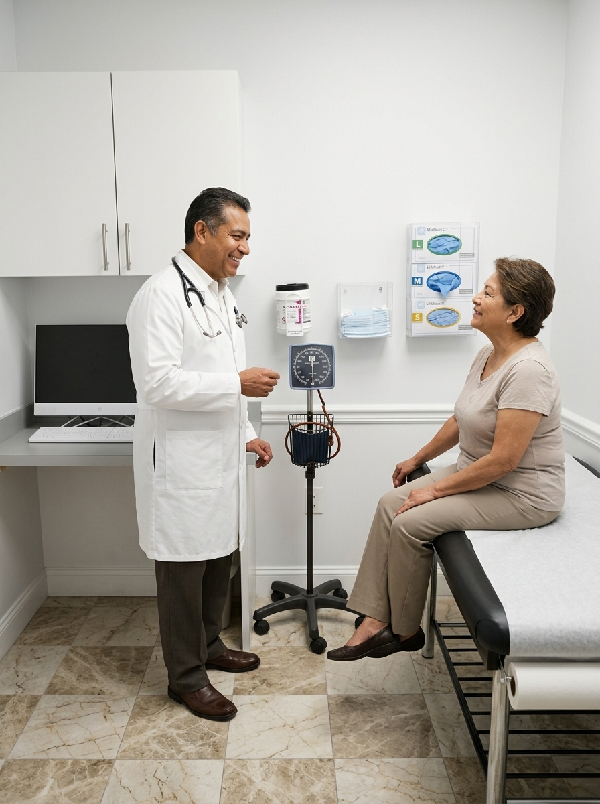
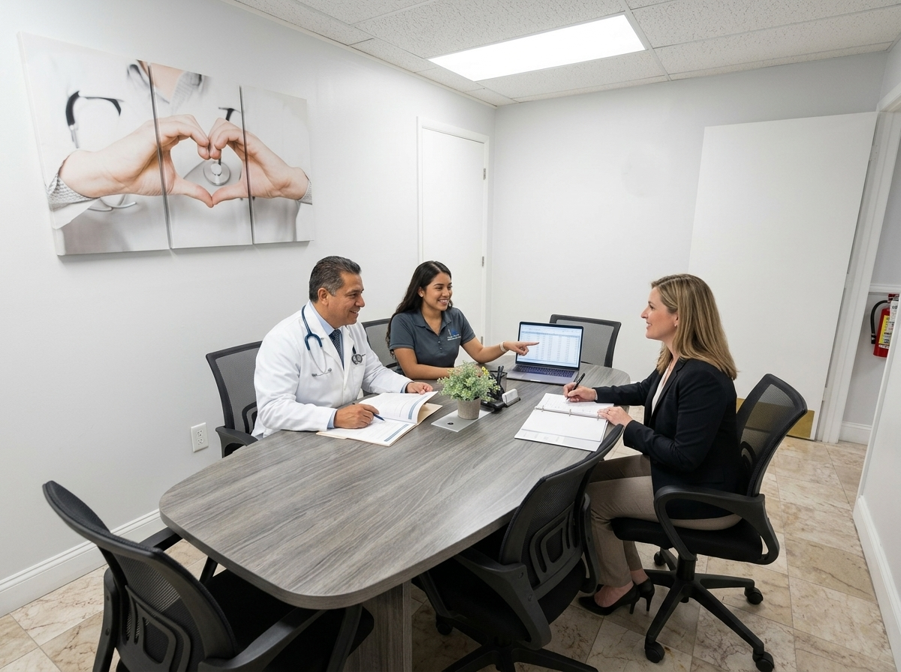
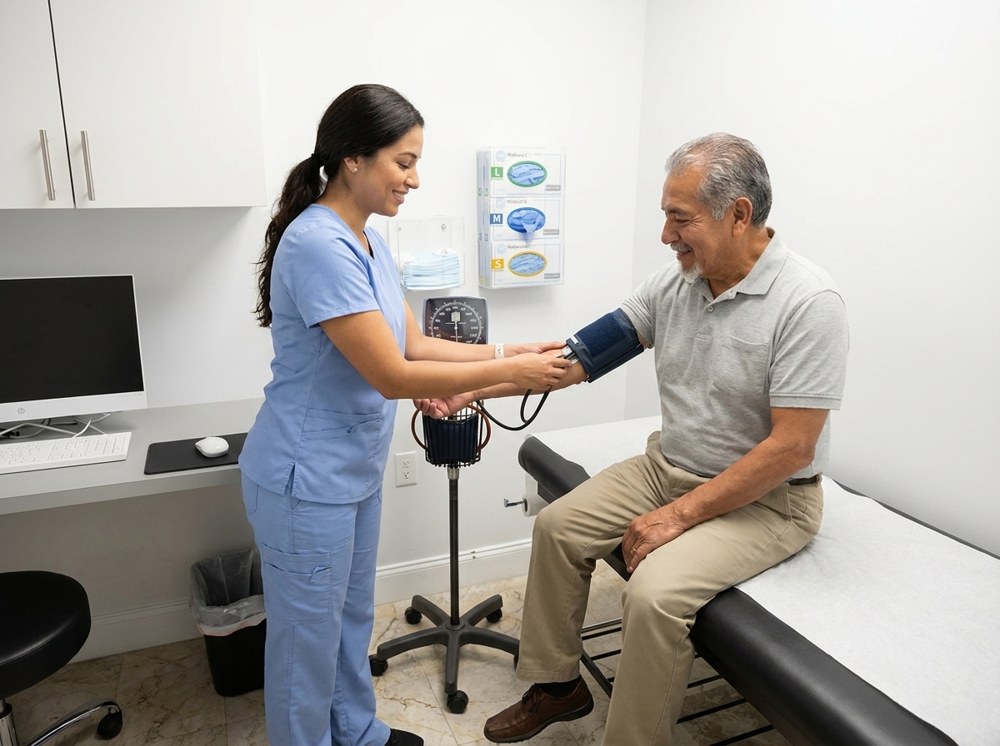
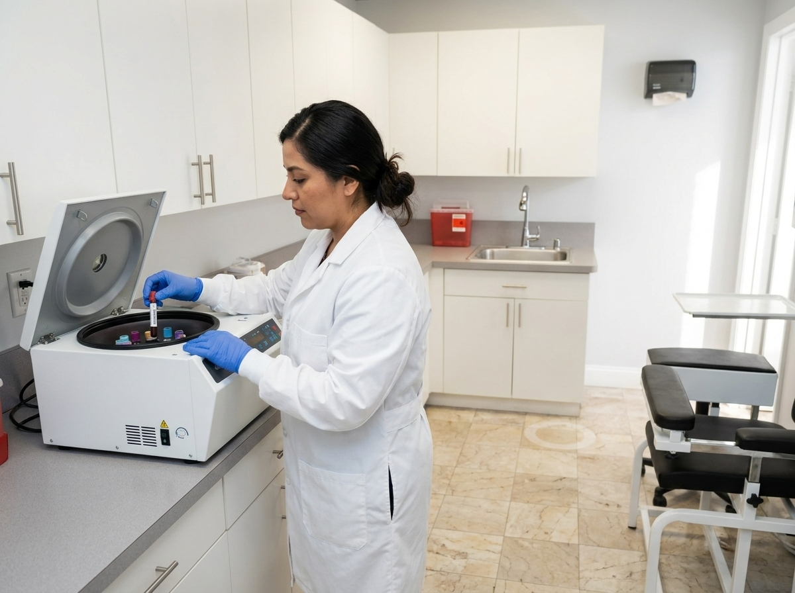

Tour our space
A look inside our Miami facility.



For over a decade, our Miami-Dade center has helped sponsors bring therapies to life — combining operational excellence with a genuine commitment to the communities we serve.
We exist to accelerate the development of safe, effective treatments. Every protocol we run is an opportunity to expand access to tomorrow's medicine for our diverse South-Florida population today.
From first feasibility call to final close-out, our team treats sponsor data and patient wellbeing as inseparable priorities.

Accurate, source-verified, audit-ready documentation on every visit — without exception.
Informed, supported, and respected participants who stay engaged through study completion.
Disciplined timelines, proactive communication, and protocols executed exactly as written.
Bringing trials to underrepresented populations so research reflects the patients it serves.

Our Miami site is equipped to support complex protocols end-to-end, on-site.


Board-certified investigators and credentialed research staff who have run hundreds of trials together.
Leads protocol oversight, medical eligibility, and participant safety across all active studies.
Owns feasibility, start-up, and day-to-day site performance against sponsor timelines.
Manage visits, source documentation, and the participant experience from screening to close.